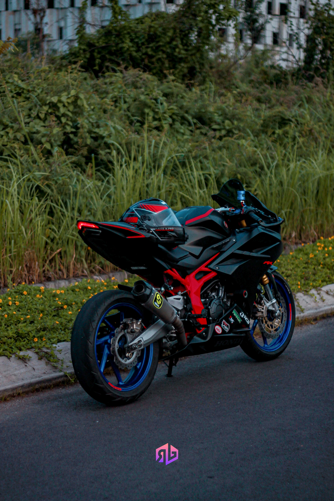

Motor 250cc terkencang dikelasnya
Spesifikasi Honda CBR250RR akhirnya secara resmi di umumkan oleh pihak Honda. Motor Honda CBR250RR ini akan siap bersaing melawan Yamaha R25 dan Kawasaki Ninja 250 FI dikelas motor sport 250cc. Honda CBR250RR ini memang lebih diunggulkan dari pada rivalnya, pasalnya motor ini menawarkan inovasi desain dan berbagai fitur yang tidak dimiliki beberapa rivalnya. Bahkan Honda CBR250RR menjadi motor sport termurah yang mengadopsi fitur riding mode dan juga sudah dibekali dengan UpSide Down, tenaga yang di keluarkan mesin Honda CBR250RR satu tingkat lebih tinggi dibanding mesin dua silinder yang digunakan Yamaha R25. Di mana untuk Yamaha R25 cuma dapat keluarkan tenaga optimal sebesar 36 PS pada putaran 12. 000 rpm serta torsinya sebsar 22. 6 Nm pada putaran 10. 000 rpm. Alhasil Honda CBR250RR dapat melaju sangat kencang serta diklaim dapat menembus keceptan optimal meraih 170 km/jam serta dapat berakselerasi dari 0-200 meter kurun waktu 8. 65 detik.
Performa mesin Honda CBR250RR juga satu tingkat lebih tinggi dibanding mesin 250cc yang digunakan Kawasaki Ninja 250FI. Pasalnya keluaran tenaga optimal Kawasaki Ninja 250 FI cuma hanya 32 PS pada putaran 11. 000 rpm serta torsi maksimumnya meraih 21 NM pada 10. 000 rpm. Jadi dapat diambil kesimpulan, Honda CBR250RR adalah motor sport 250cc terkencang sekarang ini. Tetapi performanya tidak berbeda jauh dengan Yamaha R25, hingga top speed keduanya tidak akan jauh berbeda.
Dalam segi performa Honda CBR250RR ini memang diatas kertas, karena seperti yang sudah kami ulas diatas, performa mesin yang dimiliki oleh All New Honda CBR250RR memang lebih baik. Namun semuanya kembali ke pengendara masing-masing, karena setiap orang memiliki gaya berkendara yang berbeda-beda, sehingga nantinya performa yang dikeluarkan juga akan berbeda. Selain ketiga motor sport 2450cc diatas masih ada satu lagi motor sport 250cc yang patut untuk diperhitungkan keberadaannya yaitu Suzuki GSX-250R yang akan segera dirilis. Kabarnya motor ini memiliki torsi yang lebih besar, sehingga akselerasinya juga semakin cepat.
Apa spesifikasi CBR250RR?
Kabarnya motor ini mengusung mesin dua silinder paralel twin dengan kubikasi 250cc serta diperlengkapi system pendingin cairan (Liquid Cooled). Diluar itu, ada juga tehnologi DOHC 8-Valve yang menanggung kemampuan mesin lebih responsif serta tenaganya semakin besar dibanding rival-rivalnya. Hal semacam ini dapat dibuktikan dengan keluaran tenaga optimal yang menembus angka 36. 8 PS yang dicapai pada putaran 12. 500 rpm. Sedang untuk torsinya menembus angka 22. 5 Nm pada 10. 500 rpm.